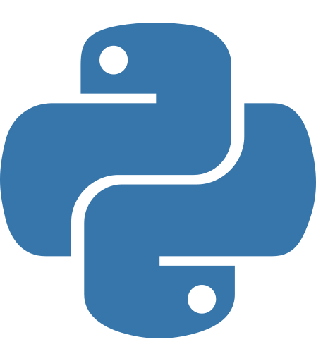
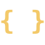
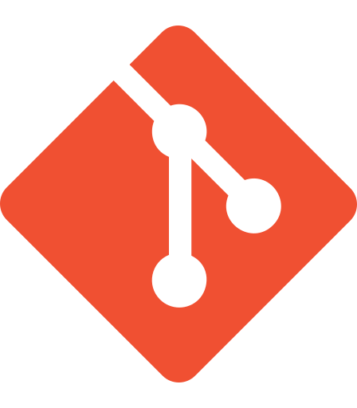
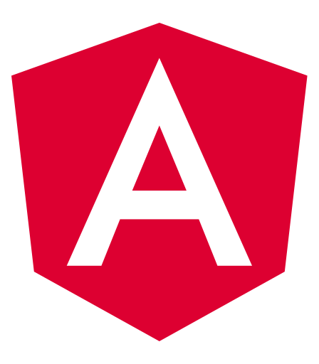

PORTAFOLIO PROFESIONAL · AUTOMATIZACIÓN
3+
Años de experiencia
E2E
Ciclo completo de automatización
L1
Soporte y monitoreo productivo
CAROLINA SUÁREZ
RPA Developer
/
Hyperautomation
/
Automation Anywhere
Ingeniera de Sistemas con experiencia en desarrollo de automatizaciones, integración de sistemas, procesamiento de datos y soporte productivo. He participado en el ciclo completo de automatización, desde el análisis del proceso hasta su implementación y seguimiento en producción.
AUTOMATION SYSTEM
ONLINE
Excel
RPA
Ansible
REST API
Power BI
01
SOBRE MÍ
Automatización con visión técnica e integral.
Soy Ingeniera de Sistemas graduada de la Universidad Simón Bolívar, con experiencia en automatización de procesos empresariales mediante RPA, scripting e integración de tecnologías.
Mi experiencia principal se ha desarrollado con Automation Anywhere, Ansible, Python y Selenium, así como con herramientas de datos, plataformas empresariales y ambientes de desarrollo y producción.
También he participado en levantamiento de requerimientos, análisis, desarrollo, pruebas, documentación, despliegue y soporte, aportando soluciones que optimizan tareas operativas y mejoran la eficiencia de los procesos.
Ingeniería de Sistemas
Universidad Simón Bolívar · 2023Minor en Ingeniería de Software y Gestión de la Tecnología de la Educación.
- RPA y Hyperautomation
- Automatización con Ansible
- Procesamiento de datos
- Integración entre sistemas
- Soporte y continuidad operativa
02
STACK
Tecnologías y herramientas.
PRINCIPAL
Automatización

Python
DATA
Bases de datos

JSON / XML
ENTERPRISE
Herramientas y plataformas

Git
COMPLEMENTARIO
Desarrollo

Angular03
PROYECTOS
Experiencias de automatización destacadas.
Los proyectos se presentan de forma general para proteger información interna.
PROYECTO DESTACADO
Automatización híbrida de capacidad
Solución desarrollada con Ansible y Automation Anywhere para recolectar información desde múltiples servidores, procesarla y consolidarla para su uso en reportes y tableros operativos.
Servidores
→
Ansible / AWX
→
JSON
→
Automation Anywhere
→
Excel / Power BI
Informe mensual de operación
Automatización para recopilar y consolidar información operativa desde múltiples fuentes, generando entregables de reporte.
Power BI→Automation Anywhere→Word / PDF
Reporte mensual de servicios Amdocs Weblogic
Navegación automatizada, captura de información y construcción de reportes a partir de datos del entorno de monitoreo.
Instana→Automation Anywhere→Word
Limpieza de volcado de memoria y reinicio WAS
Automatización orientada a tareas operativas y de continuidad en entornos WebSphere, con validaciones y recuperación controlada.
Validación→Ansible→WebSphere
Modificación de automatización de mantes intermedios
Mejora de una automatización existente para soportar ejecución sobre múltiples perfiles y ampliar su alcance operativo.
Profiles→Ansible→Logs
Insumos para tablero de capacidad del servicio
Procesamiento de archivos, actualización de estructuras de datos y preparación de insumos para visualización en tableros.
Excel→Automation Anywhere→Power BI
Proyecto de prácticas con Python
Desarrollo de automatización web con Python y Selenium, integrando extracción de información y uso de base de datos.
Python→Selenium→MySQL
04
EXPERIENCIA
Trayectoria profesional.
2023
Actualidad
ACTUAL
DS Specialist · DS Hyperautomation
GBMDesarrollo e implementación de automatizaciones para procesos empresariales, integrando RPA, automatización con Ansible, archivos de alta data, bases de datos, APIs y plataformas corporativas.
- Automation Anywhere y Ansible / AWX.
- Excel, SQL/MySQL, APIs, SharePoint, SAP y Power BI.
- Pruebas, documentación y salida a producción.
- Soporte L1, monitoreo de ejecuciones e incidentes.
- Análisis de logs y seguimiento de tickets.
2023
Prácticas
PRÁCTICAS
Practicante · Hyperautomation
GBMEtapa de formación y práctica donde adquirí conocimiento sobre automatización de procesos mediante bots, utilizando Python junto con la librería Selenium, además de fortalecer mi formación en Automation Anywhere.
- Automatización web con Python y Selenium.
- Extracción y gestión de información.
- Integración con base de datos.
- Manejo de errores, pruebas y documentación.
CONTACTO
Disponible para nuevas oportunidades profesionales.
Este portafolio reúne una muestra de mi experiencia y proyectos en automatización. Si mi perfil se alinea con una oportunidad, con gusto puedo compartir información adicional sobre mi trayectoria profesional.